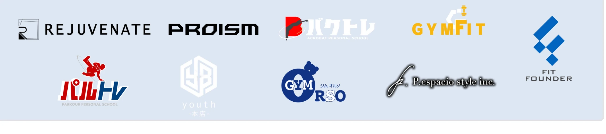

TIKTOK × 集客
アクロバット教室
半年で売上150%UP
- 1か月目から総再生50万回突破
- フォロワー 1,400人 → 12,000人
SNS運用代行
横型YouTubeの制作から、
LINEで問い合わせを受けるところまで。
どの動画から何件の問い合わせが出たかを、
毎月お渡しします。
ご相談だけで終わっても
費用はかかりません。
動画 → LINE → 問い合わせ。企画・撮影・編集、投稿・コメント返信、LINEで問い合わせを受ける、毎月の件数表
動画 → LINE → 問い合わせ。
この流れを、まとめて受け持ちます。
様々なジャンルに対応可能です！
横にスクロールできます
新規チャンネルや、制作コストを抑えて数字を伸ばしたい方、短期間で収益化したいという方にはYouTube Shorts がおススメ！
BUZPOSはショート動画の企画・制作を得意としています。
横にスクロールできます
フルスクリーン再生

横にスクロールできます
TIKTOK × 集客
半年で売上150%UP
TIKTOK × YOUTUBE
運用3か月でYouTube収益化
YOUTUBE SHORTS × 認知
2本目の投稿で80万回再生
アクトレブログ
最初の2秒と構成の確認
月1回の企画レビュー
企画・映像制作の監修
ジム・体操教室・整体・ダンスなど身体系の業種
四半期に1回、月2社まで
撮影同行・出演・本人アカウントで告知
通常は店長・スタッフの出演を前提に、負担の少ない企画から始めます。
| 制作単価 （企画・撮影・編集込み） | 1本あたり |
|---|---|
| 横型ロング動画 | 5〜8万円 |
| ショート動画 | 1〜3万円 |
| 広告用の短い動画（撮影素材から制作） | 1万円 |
| LINEの計測・自動案内・広告の運用手数料 | 月額0円 |
| 初期費用（LINEの設定・計測の準備） | 5万円（初月のみ） |
20万円 / 月
成果報酬の上限10万円。制作費と合わせて最大30万円／月
36万円 / 月
成果報酬の上限18万円。制作費と合わせて最大54万円／月
価格は税別。広告費は実費（月3万円程度から・御社の広告口座）、LINE公式アカウントの月額は別途。月の投稿本数やコンテンツ内容によって変動しますので、詳しくはお問い合わせください。
自社で制作したい方へ: 内製化サポート 月額10万円（企画提案・分析レポート・LINE相談）
成果報酬=件数×1件の単価上限: 制作費の半額
契約時に決めた成果（例: 体験予約、見積依頼、相談）が動画のリンク経由で発生した件数に、契約で決めた1件の単価を掛けた金額です。上限はその月の制作費の半額で、超えた分は請求しません。例1なら上限10万円（1件5,000円なら20件分）、例2なら上限18万円（36件分）です。
目的と現状を確認
運用内容と金額をご提示。ここまで無料
成果として数える条件を書面で確認
アカウント、LINE、台本を準備
撮影は月1〜2回。編集後に投稿開始
運用開始30日目に、
動画ごとの問い合わせ件数表をお渡しします。
オンライン30分。動画がまだ無い会社もご相談ください。
ご相談だけで終わっても費用はかかりません。
1営業日以内にご返信します。